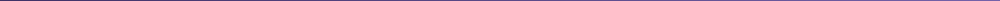

projetosworks
TipoSP
Web DesignUm sistema com tradução da tipografia da cidade, desde o seu nascimento até o presente.

Vizão
Editorial“Povos Originários estão revolucionando a ciência com seus conhecimentos ancestrais”
Gorducha
TipografiaUm sistema tipográfico display inspirado em elementos orgânicos que busca resgatar a estética divertida dos anos 70.
Dengo
EstampasInvestiga a diversidade cultural brasileira e traduz visualmente em uma identidade gráfica
A Substância
Motion DesignAbertura de um audiovisual criada para o filme A Substância (2024)
NSG
Identidade VisualRebranding para o time de e-sports Noise Gaming, focado em video games de futebol.
Lord Ruthven
ExperimentaçãoTransformar um incômodo em experimento digital para as redes sociais.
Recorte
Livreto - EditorialSelecionar conteúdos da Revista Recorte e diagramá-los no modelo de livreto físico.
Kit Kat
EmbalagemProjeto se inicia sobre o momento do “break” como recorte temático, construímos uma linha de sabores pro público-alvo jovem.
Fósforo
EmbalagemRedesign de embalagem para a marca Fósforo Paraná, com o objetivo de atualizar a embalagem da marca.
Cartaz Granado
Ritmo VisualComposição de elementos livre, com a escolha dos elementos para a marca Granado.